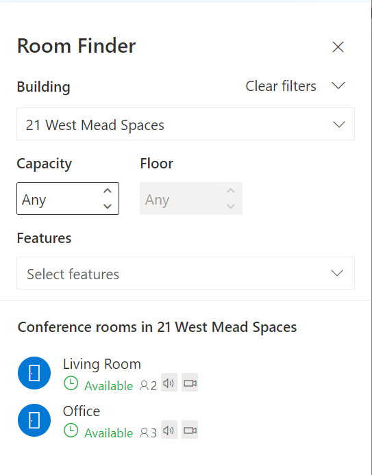
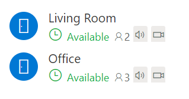

Updated Outlook Room Finder
With everything going on in the world recently booking meeting rooms in the office was not something many of our staff had thought about. Now with staff slowly beginning to be allowed to go back to the office we needed to update our room booking approach.
Turns out Microsoft has updated their Room finder since the last time I used it and it all looks that little bit better! Room Finder works within the Outlook application as well as Outlook in Office 365.

If you already have Room lists setup then you will likely have already seen the new design and it all works. If not then you will need to setup Room lists to take advantage of the new Room Finder. I will go through the basic steps for setting up a Room list below as well as how to utilise the filter functionality using the Set-Place cmdlets in Powershell. I will be basing the following steps around an Exchange Online environment.
If you don't have any already you will need some Room accounts setup in Exchange Online. This is nice and easy to do and very documented. OUTLOOK ROOM ACCOUNTS
Once you have some rooms we can create some Room lists. Room lists are essentially a distriubtion list for your room acocunts. The rather annoying thing is they can only be managed by the Exchange Management Shell and not the Admin GUI.
Connect to your Exchange Management Shell and run the following command to create a Room List:
New-DistributionGroup -Name "London Office" -RoomList
Add your room accounts to the list by using the following command:
Add-DistributionGroupMember -Identity "London Office" -Member yourroom@yourdomain.com
Do this for all the rooms you want to add to the list.
In theory this is all you need to do to add rooms to the Room Finder function. Login to Outlook, add a meeting and click the room finder button
In the building option search for your new Room List and you will see the available rooms within the list.
To enhance this further you can use the Set-Place cmdlets to allow for further filtering. Below is the command to add filtering options for Capacity, Audio and video capabilities. This is per room mailbox.
Set-Place -Identity yourroom@yourdomain.com -AudioDeviceName "Poly Collab Bar" -VideoDeviceName "Poly Collab Bar" -Capacity "2"
You can then filter on these attributes and you can see they have the added icons by the room name for quicker identification on what the room offers.
You maybe thinking this all seems like a lot of work if you have a lot of rooms to manage and update. Brian Reid has a good guide here for quickly updating all of your room accounts using a CSV file. Then you only have to worry about the Room lists! BRIAN RIED'S BLOG POST